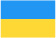

Україна
Чому Україна
Про Україну
Україна – найбільша країна в Європі. Країна з багатою та різноманітною культурою, батьківщина всесвітньо відомих митців та літераторів. Хочете дізнатись більше про минуле та сьогодення України? У цій статті ви знайдете цікаві факти та посилання на ресурси, які допоможуть вам пізнати сучасну Україну.
Україна – це держава зі славним і, водночас, трагічним минулим. Люди різних національностей долучилися до творення її історії. Також Україну формують спадщини різних держав, до яких вона колись входила, перш за все Австро-Угорщини, Російської імперії та Радянського Союзу.
Українська кухня з її різноманітними смаками та технологіями приготування страв є важливою складовою культурної спадщини країни. Вона відображає особливості регіонів країни та кулінарну спадщину різних етнічних та національних спільнот України.Суспільне життя
У кожному великому місті України постійно проводяться різноманітні традиційні фестивалі. Міжнародний
джазовий фестиваль під відкритим небом у Львові та фестиваль вуличної їжі є невід’ємними та
найгарячішими пропозиціями фестивального літа.
Традиційні свята вважаються визначною подією в житті кожної української родини, тому їх відзначають в
сімейному колі. Більшість людей відвідує ярмарки та концерти під час Масляної (за тиждень до Великого
посту), Різдва, Івана Купала (Іванів день). На цих заходах Ви можете скуштувати смаколики традиційної
української кухні; приєднатися до численних стародавніх розваг, зануритися в глибини української
культури.
В Україні ви маєте унікальну можливість відвідувати театри, виставки, кінотеатри за дуже привабливими цінами. Більшість музеїв і художніх галерей пропонують спеціальні знижки для студентів. Українська опера представлена такими національними виставами, як «Наталка Полтавка» та «Запорожець за Дунаєм». Захоплюючі і зворушливі історії, сповнені українського автентичного духу приваблюють глядача яскравими, динамічними народними танцями та піснями, що передають відразу цілу гаму переживань.
Про вищу освіту в Україні
Українська система вищої освіти має давню історію становлення та розвитку, завдяки власній фундаментальності вважається однією з найкращих у світі. Діяльність перших закладів вищої освіти в Україні сягає початку XVII століття, вища школа того часу здобула міжнародного визнання, що сприяло залученню студентів з усього слов’янського світу. Досвідчені викладачі та професори, велике розмаїття спеціальностей, європейські стандарти якості залишаються основними причинами популярності вищої освіти України серед іноземних студентів і сьогодні.
У травні 2005 року Україна приєдналася до Болонського процесу. Болонський процес позитивно впливає на інтеграцію української освіти в єдиний європейський освітній простір.
В Україні підготовка фахівців здійснюється за освітніми програмами на таких рівнях вищої освіти:
- початковий (короткий цикл навчання),
- перший (бакалаврський),
- другий (магістерський) рівень,
- третій (освітньо-науковий/освітньо-творчий).